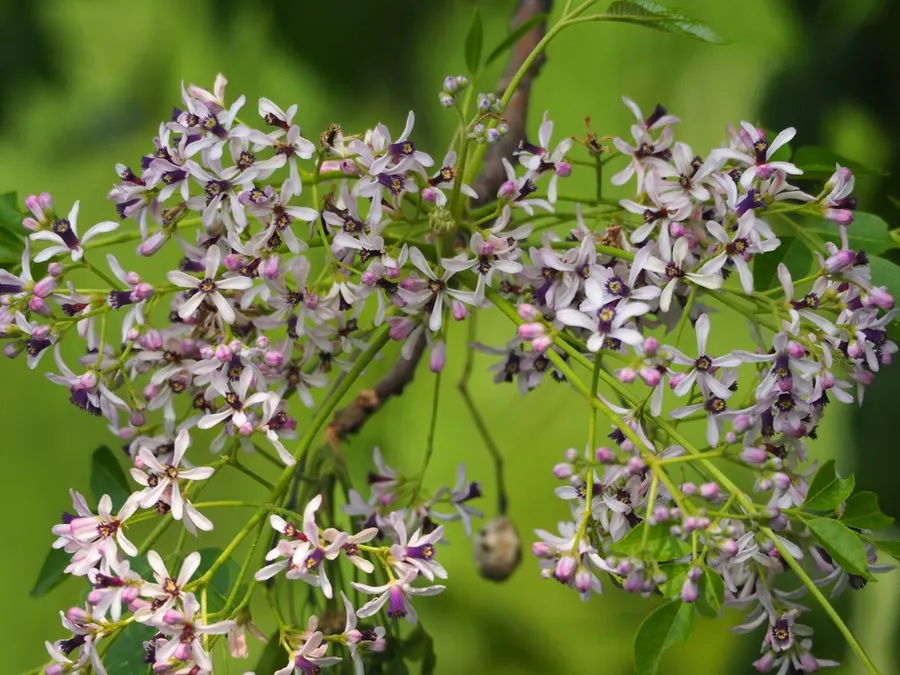

乔木 · 植物界
楝树 Melia azedarach

中国南方常见的落叶乔木，春夏开满淡紫色小花并散发清香，果实有毒但可入药，是传统的乡土树种。
- 分类
- 门被子植物门纲木兰纲目无患子目科楝科属楝属
- 栖息环境
- 海拔 1000 米以下的村旁、路旁、河岸与山坡，喜光耐瘠薄
- 地理分布
- 中国黄河以南至华南、西南各地，印度、东南亚也有分布
- 保护级别
- 暂无评估；中国未列入国家重点保护野生植物名录
物种志
楝树为落叶乔木，高可达 20 m，树皮暗灰褐色、纵裂；二至三回羽状复叶，小叶卵形至椭圆形，边缘具锯齿。花期 4–5 月，圆锥花序腋生，花淡紫色、芳香，花瓣 5 枚，雄蕊合生成紫色筒状；核果椭圆形或球形，成熟时黄褐色，冬季仍挂于枝头，内含 4–5 粒种子。
楝树分布于中国黄河以南至华南、西南各地，也见于印度、东南亚，喜光、喜温暖湿润，耐干旱瘠薄，适应性强，常生于村旁、路旁与河边。木材轻软、纹理直，可供家具、农具与乐器用；树皮纤维可制绳、造纸；根皮、树皮与果实可入药，能驱虫、止痛，但果实有毒，不可食用。楝树也是传统的生物农药来源，其提取物可用于防治农业害虫，树形优美、花香淡雅，是优良的庭荫树。
形态与习性
- 株高可达 20 m，树皮暗灰褐色纵裂
- 花期4–5 月，花淡紫色芳香
- 果期10–11 月，核果黄褐色宿存
- 光照喜光，不耐长期荫蔽
- 水分耐干旱瘠薄
- 土壤适应性强，各类土壤均可生长
- 主要用途庭荫树、家具与乐器用材、树皮果实入药、生物农药
趣味知识
- 楝树春夏开淡紫色小花，花有清香，是南方村旁常见的乡土树种。
- 楝树的果实有毒，不可食用，但可入药并用于制作生物农药。
- 楝树的核果黄褐色，冬季仍挂在枝头，是辨认它的明显特征。
- 楝树耐干旱瘠薄、适应性极强，在村旁和路旁都能生长良好。